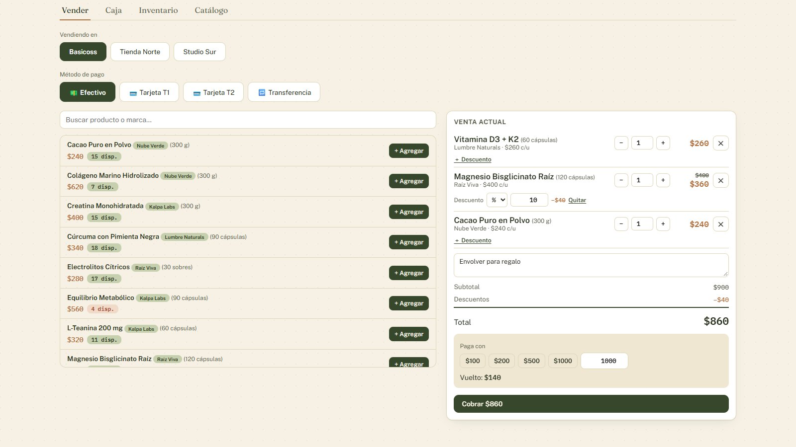
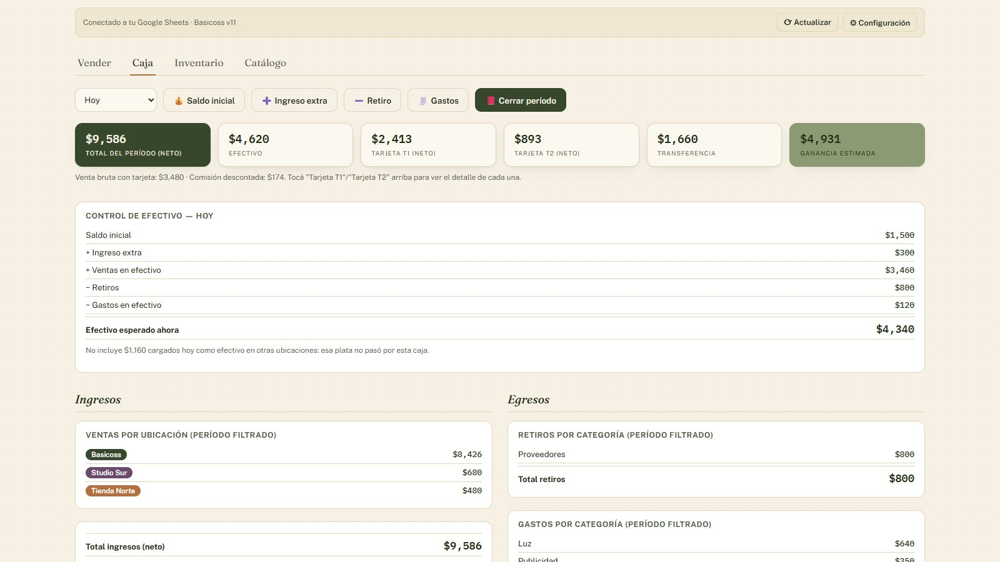
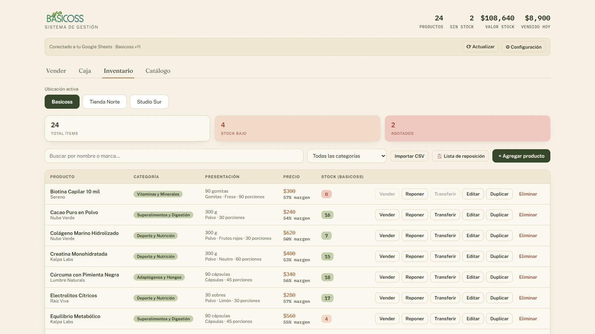
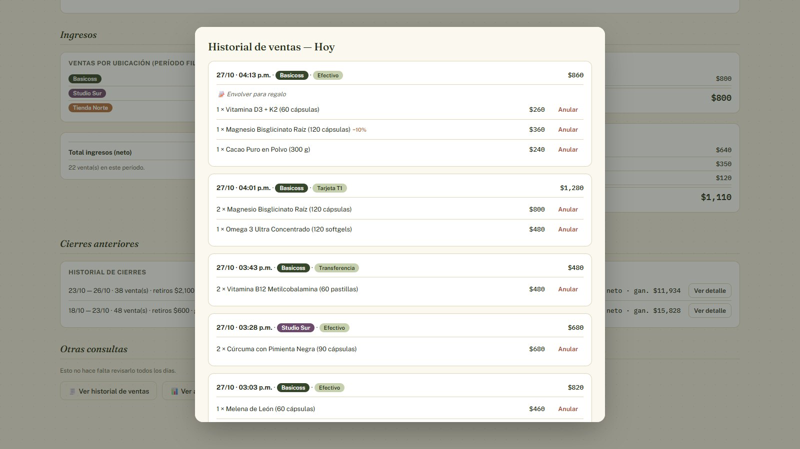

Sistema de gestión Basicoss
Sistema de inventario, ventas y caja para un local de suplementos y productos naturales. Funciona en el navegador y guarda todo en una planilla de Google del propio negocio: sin base de datos ni hosting.
Demo con datos ficticios, sin audio (menos de 1 minuto). La app real guarda todo en la planilla de Google del negocio.
Qué se ve en el video
- El inventario muestra el stock de cada producto, con tarjetas de stock bajo y de agotados.
- La lista de reposición agrupa por marca lo que hay que pedir.
- Se importan productos nuevos desde un archivo CSV: se ve el archivo, se sube y los productos aparecen en el inventario.
- En Vender se elige el local (el negocio lleva el stock de cada uno), se arma el carrito, se aplica un descuento a un artículo, se escribe una nota en el ticket y se paga en efectivo: la app calcula el vuelto.
- Cada venta queda escrita como una fila en la planilla de Google del negocio (en el video, una vista dibujada con datos inventados).
- Caja muestra cuánto efectivo debería haber, las ventas por método de pago con la comisión de tarjeta ya descontada y la ganancia estimada.
- Al cerrar el período se compara el efectivo contado con el esperado.
- El historial agrupa cada compra con su descuento y su nota.
- El catálogo queda listo para compartir por WhatsApp.
Problema
Basicoss es un local de suplementos y productos naturales en Tuxtla. Llevaba su inventario en una hoja de cálculo y necesitaba, además, vender con un carrito, saber cuánto efectivo hay en la caja y llevar el stock de la mercadería que deja en otros locales.
Hacía falta una herramienta simple, hecha a su medida, para usar en el mostrador todos los días.
Decisión
Para un negocio chico, la decisión fue qué no construir: ni servidor, ni base de datos, ni hosting. La app es un solo archivo HTML y los datos viven en una planilla de Google que es del negocio (la cuenta de la dueña, no la mía), así que también se puede abrir y editar a mano como cualquier planilla. Un Apps Script hace de puente entre la app y la planilla.
Otras dos reglas ordenan el resto: el costo y el precio quedan «fotografiados» en cada venta, para que cambiar un precio mañana no altere la ganancia de ayer, y la app no deja vender más de lo que hay.
Construcción
- Inventario con el stock de cada local (la tienda y otros dos donde deja mercadería en consignación), alertas de stock bajo y agotado, stock mínimo por producto y una lista de reposición agrupada por marca, lista para pedirle a cada proveedor.
- Importación de productos desde un CSV: detecta los repetidos y entiende precios con distintos separadores de miles.
- Venta con carrito, descuento por artículo (en porcentaje o en pesos), nota por ticket, cálculo del vuelto y comisión de tarjeta, para ver lo que realmente entra.
- Caja con saldo inicial, ingresos extra, retiros por categoría y gastos. Muestra cuánto efectivo debería haber y el cierre de período lo compara con lo contado.
- Historial de compras por ticket: anular una venta devuelve el stock.
- Costo y margen por producto, y ganancia estimada.
- Catálogo para compartir por WhatsApp, como texto o como imagen con fotos.
Entrega y cuidado
Los datos son del negocio y se usan todos los días, así que cada actualización se trata con cuidado: un registro de cambios por versión que anota también lo que no se ve en pantalla, una guía de entrega con respaldos antes de tocar nada y una forma de volver atrás, y un ensayo en una planilla de Google de prueba, con el mismo código que usa el local, antes de entregar.
La versión 11, en revisión con la clienta, suma protecciones para que no se pierdan datos: el Apps Script rechaza un guardado si otro dispositivo guardó antes o si dejaría una hoja casi vacía, y la app no deja guardar si no pudo leer los datos. La versión instalada se ve en pantalla.
Resultado
En uso diario en el local. La versión 11 (descuentos por artículo, notas en el ticket y protección de los datos) está en revisión con la clienta. Cuando haya resultados de uso, los sumo acá.
Tecnología
HTML, CSS y JavaScript sin framework en un solo archivo, Google Sheets y Google Apps Script, PapaParse para leer CSV y html2canvas para exportar el catálogo. Pruebas automáticas con Playwright y Node: el Apps Script real corre contra una planilla simulada. Desarrollado con asistente de IA (Claude Code); las decisiones de producto, diseño y revisión son mías.
Pantallas




Todas las pantallas y datos de esta página son de demostración, con nombres inventados.